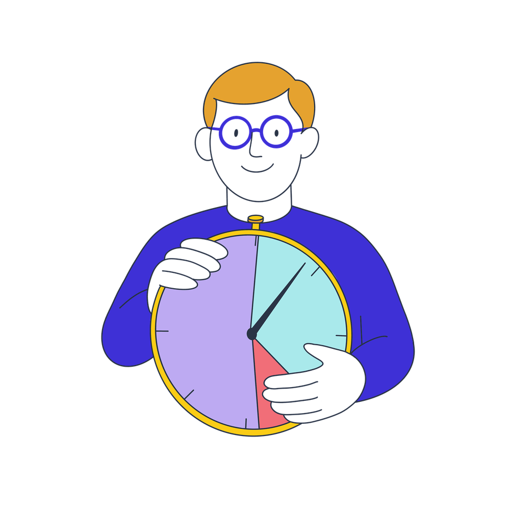

Gib dem Workshop Struktur und Tempo und erfahre, wie du Zeiten flexibel steuerst und anpasst
Die durchschnittliche Bearbeitungszeit beträgt 12 Minuten

Bestimmt warst du schon in dem ein oder anderen Workshop oder Meeting, wo du dir dachtest: „Oh, das wird eng heute“.
Und genau deshalb schauen wir in diesem Kapitel auf ein effektives und flexibles Zeitmanagement, eine deiner zentralen Aufgaben als Facilitator.